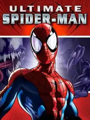

 |
|
| Tiempo de juego | 3m 4s |
| Última actividad | 11/11/2025 10:28:52 |
| Añadido | 23/9/2025 2:40:21 |
| Modificado | 3/12/2025 11:55:36 |
| Estado de finalización | Jugado |
| Librería | Playnite |
| Fuente | |
| Plataforma | PC (Windows) |
| Fecha de lanzamiento | 21/9/2005 |
| Puntuación de la Comunidad | 76 |
| Puntuación de la Crítica | 74 |
| Puntuación de usuario | |
| Género | Hack and slash/Beat 'em up |
| Desarrollador | Beenox Treyarch |
| Editor | Activision Taito |
| Característica | Single Player |
| Enlaces | |
| Tag | Voz y Texto en Español |
Si alguna vez soñaste con jugar adentro de una página de cómic, este es tu juego. "Ultimate Spider-Man" no es una adaptación de una película; es la transposición directa de la legendaria serie de cómics del mismo nombre de principios de los 2000. Es una obra de arte interactiva que respira y se mueve como una historieta.
El juego usa un estilo gráfico "cel-shading" que clava a la perfección el trazo del dibujante Mark Bagley. Las cinemáticas hasta usan paneles de cómic para contarte la historia, que fue escrita por el mismísimo guionista del comic, Brian Michael Bendis. Es el nivel más zarpado de fidelidad al material original que te puedas imaginar.
Pero la verdadera genialidad es que no jugás solo como Spider-Man. Gran parte del juego te pone en la piel (o en el simbionte) de Venom. Y manejar a Venom es una bestialidad. No se balancea, pega saltos que atraviesan la ciudad. Es un tanque de odio que destroza autos y tiene que "alimentarse" de gente para recuperar vida. Es una experiencia de poder brutal y oscura.
El mundo abierto de Nueva York sigue siendo tu patio de juegos, con un sistema de balanceo heredado del Spider-Man 2 pero más ágil y arcade. Las misiones, las carreras contra la Antorcha Humana y los combates contra un montón de villanos del universo Ultimate completan un paquete espectacular.
"Ultimate Spider-Man" es una carta de amor a los cómics. Es una de las adaptaciones más fieles y estilizadas que se han hecho, ofreciendo la fantasía única de no solo ser el héroe, sino también el monstruo. Una joya visual con una jugabilidad increíblemente divertida.